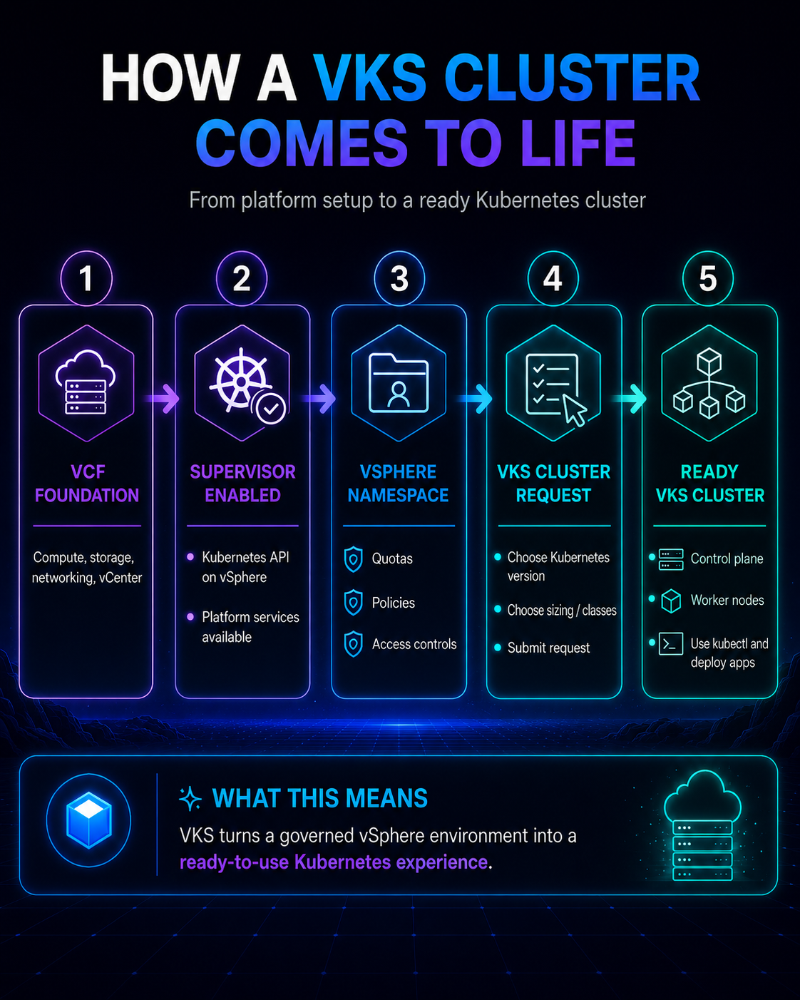
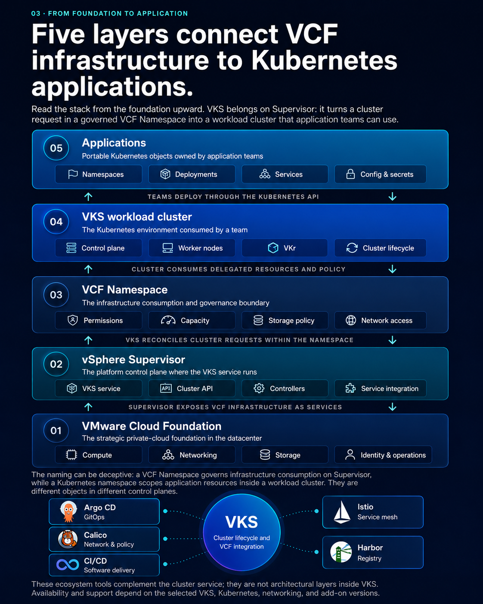
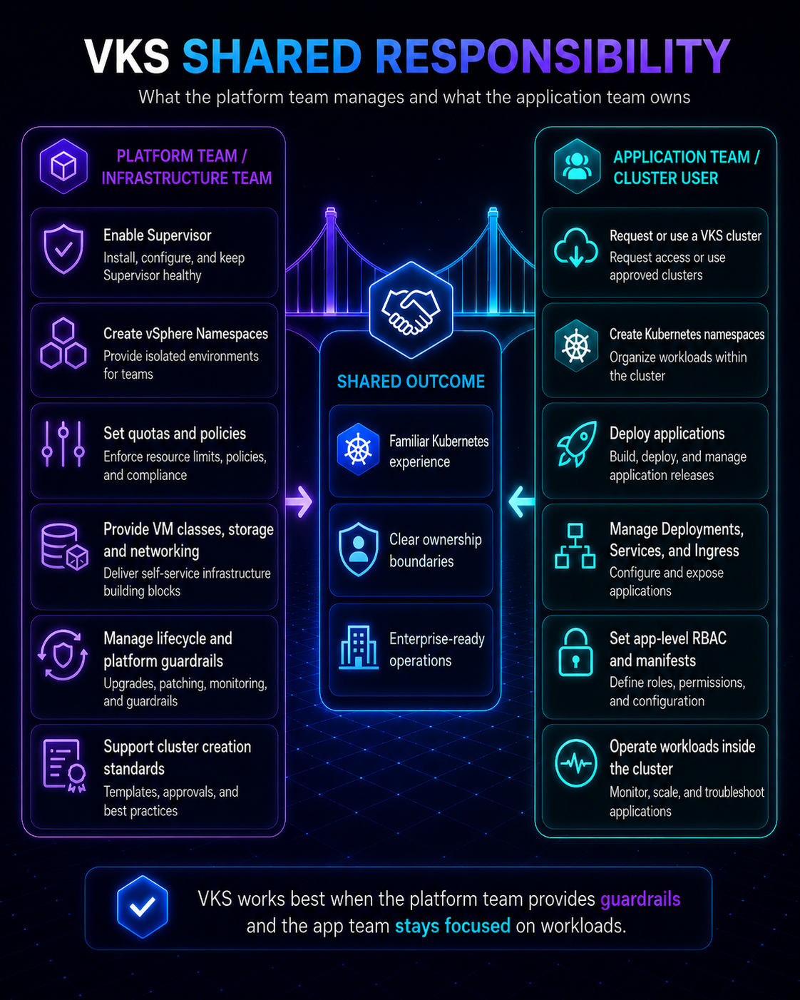

01 · The starting point
The first cluster works. Then the enterprise questions begin.
Imagine a platform team that has proved Kubernetes with one application. Developers can submit a Deployment, Kubernetes schedules the Pods, and a Service makes them reachable. The demonstration is successful. Now several more teams want clusters.
Kubernetes still does its job. The new questions sit around it: who can create clusters, who patches them, who monitors them, who applies policy, who integrates storage and networking, and how does the datacenter deliver Kubernetes repeatedly as a governed service?
Kubernetes answers, “How should this application run?” VKS and VCF answer, “How will our datacenter deliver and operate the Kubernetes environments that applications need?”
02 · Vendor-neutral context
Start with the portable Kubernetes contract.
A Kubernetes cluster has a control plane and worker nodes. The control plane exposes the API and reconciles desired state; worker nodes run Pods. Namespaces scope many resources inside a cluster, while Services provide stable network access to changing sets of Pods.
These concepts remain relevant whether the cluster was assembled with upstream tools, supplied by OpenShift, delivered by a cloud provider, or created by VKS. Applications still interact with Kubernetes objects rather than vSphere objects.
This is the stable center of the story: VKS does not ask developers to abandon Kubernetes. It gives the platform team a repeatable way to supply the clusters behind that familiar API.

The workload definition does not describe ESXi hosts.
Infrastructure details are handled below the application API. That separation is central to understanding VKS.
apiVersion: apps/v1
kind: Deployment
metadata:
name: storefront
spec:
replicas: 3
selector:
matchLabels:
app: storefront03 · From foundation to application
Five layers connect VCF infrastructure to Kubernetes applications.
Read the stack from the foundation upward. VKS belongs on Supervisor: it turns a cluster request in a governed VCF Namespace into a workload cluster that application teams can use.

Compute, networking, storage, identity, lifecycle, and operations.
The service and controllers that turn requests into workload clusters.
Namespaces, Deployments, Services, configuration, and application ownership.
The naming can be deceptive. VCF Namespaces and Kubernetes namespaces are different objects in different control planes.
04 · Shared responsibility
VKS changes who does the work; it does not remove the work.
Exact ownership varies by organization, but a useful operating model separates infrastructure, platform, and application concerns. The interfaces between these teams deserve as much design attention as the technology.

- VCF and vSphere lifecycle
- Supervisor availability
- Compute capacity
- Network and storage services
- Namespace-level policy
- Cluster classes and versions
- VKS cluster lifecycle
- Baseline add-ons and controls
- Observability and support
- Developer experience
- Deployments and Services
- Application namespaces and RBAC
- Configuration and secrets
- Application reliability
- Workload security posture
05 · Platform translation
Bring the mental model you already have.
These are conceptual translations, not claims of exact feature equivalence. Their purpose is to show where familiar responsibilities move when teams adopt VKS.
| Question | Upstream | OpenShift | EKS / AKS / GKE | vSphere background | VKS |
|---|---|---|---|---|---|
| Who supplies clusters? | Your selected tooling and team | OpenShift installer and operators | Cloud-provider service API | Usually manual VM provisioning | VKS controllers on Supervisor |
| Primary tenancy boundary | Cluster and Kubernetes namespace | Cluster, Project, and policy | Cloud account plus cluster and namespace | vCenter, cluster, resource pool, folder | VCF Namespace plus workload cluster and namespace |
| Infrastructure integration | Assembled from chosen providers | Integrated platform stack | Native cloud services | vSphere compute, network, and storage | VCF and vSphere services exposed through policy |
| Control-plane operations | Your responsibility | Platform administrators | Mostly cloud provider | Not normally a Kubernetes concern | Customer-operated through VKS lifecycle management |
| Developer API | Kubernetes API | Kubernetes and OpenShift APIs | Kubernetes API plus cloud APIs | vSphere and automation APIs | Kubernetes API plus VCF consumption interfaces |
06 · The strategic foundation
VKS is not a standalone island. Its advantage comes from VCF.
At this point in the story, the cluster is only one outcome. The larger objective is a private-cloud platform that can deliver virtual machines, Kubernetes clusters, and modern applications from a consistent operational foundation.
Use common compute, networking, storage, identity, lifecycle, and observability capabilities instead of building a separate infrastructure island for Kubernetes.
VCF Namespaces and VKS translate infrastructure capacity into governed, delegated Kubernetes consumption.
Platform teams can support VMs and Kubernetes while evolving operating practices toward automation and application-centric services.
Organizations retain control over data location, infrastructure policy, security boundaries, and lifecycle decisions.
07 · Knowledge reinforcement
Check the reasoning, not the score.
Choose an answer in each card. The review explains the correct answer and why every alternative falls short. Nothing is scored or stored.
Question 01Which statement best separates Kubernetes from a Kubernetes platform?+
Correct answer: B Kubernetes defines the portable workload and reconciliation model. A platform adds supported lifecycle, infrastructure, security, governance, and experience choices.
Question 02What is the primary role of VKS?+
Correct answer: A VKS is a Supervisor Service providing APIs and controllers for Kubernetes workload-cluster lifecycle on vSphere.
Question 03Why is a VCF Namespace not the same as an application namespace?+
Correct answer: C The similarly named constructs live at different layers and establish different boundaries.
Question 04Who remains responsible for application Services, configuration, and workload reliability?+
Correct answer: B A managed cluster lifecycle does not transfer ownership of application behavior.
Question 05Why is VCF central to the VKS value proposition?+
Correct answer: B VKS draws its strategic value from VCF’s integrated infrastructure, lifecycle, policy, and operational capabilities.
08 · Key takeaways
The short version.
Kubernetes is an orchestration foundation, not a complete enterprise platform by itself.
VKS provides workload-cluster provisioning and lifecycle through Supervisor.
Applications retain the standard Kubernetes mental model and APIs.
VCF Namespaces and workload-cluster namespaces are different boundaries.
VCF authorization and Kubernetes RBAC control different object boundaries.
VKS connects Kubernetes consumption to the VCF private-cloud operating model.